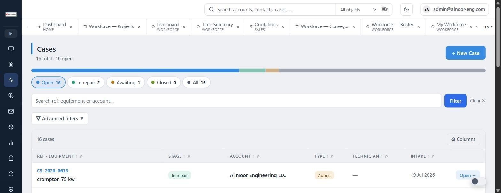
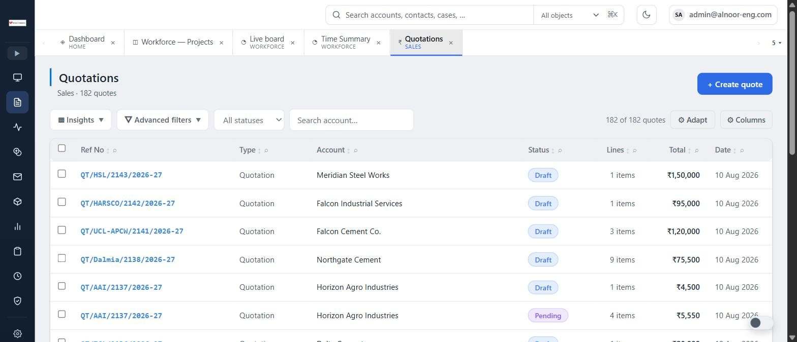
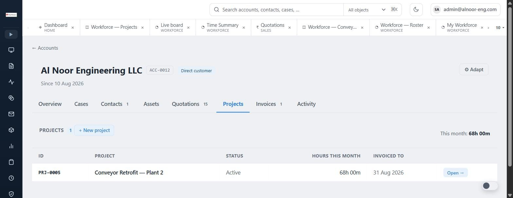
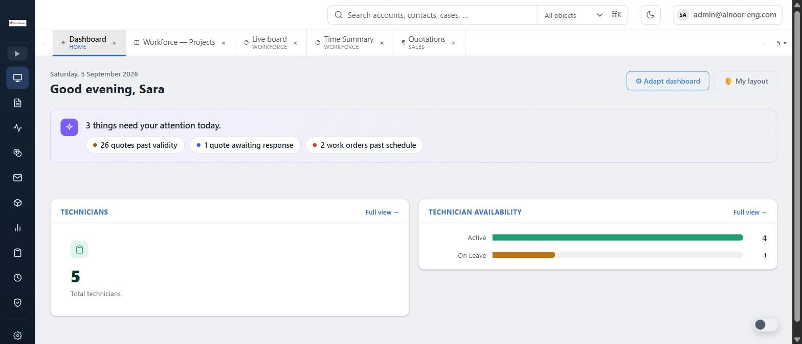
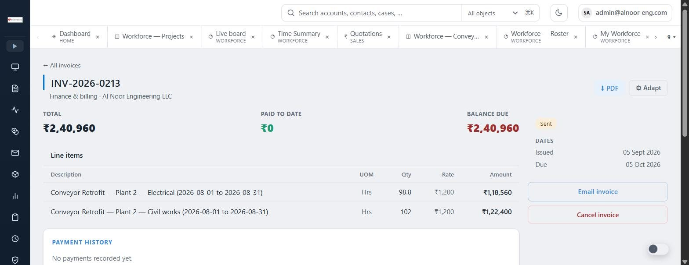

Intake, inspection, quotation, repair, quality check and delivery — connected to the customer, the equipment and the contract. No spreadsheets, no missed steps, no scattered data.

Most tools cover one slice. BPMSquare joins the dots — the customer, the quote, the job, the contract and the invoice live in one flow, not five disconnected tools.
Accounts and contacts, the equipment you look after, every case, quote, contract and invoice — one profile, with a health rating and what to do next.
Log the unit or the site visit with photos, record findings, and build an inspection report the customer can read.
Line items from a product catalogue or a rate card, tax and discounts, revisions, PDF, and a link the customer can approve from their phone.
Assign a technician, set the schedule, track progress to delivery, and see who is free on the dispatch board.
Recurring maintenance agreements with visits auto-scheduled on the calendar and a service history per customer and per asset.
Raise the invoice from the quote, the work order or the hours; record payments; email the PDF; keep the history.
From the unit arriving to the day it is delivered — guided, tracked and visible to the whole team in real time.
Log the job, customer and equipment photos.
Record findings, build an inspection report.
Send the quotation, track the approval.
Assign a work order, execute the job.
Quality check, mark the unit ready.
Hand back, invoice and keep the history.
From a BPMSquare workspace. Company and employee names are fictional.
Every quote has a reference, a status, line items and a PDF. Send it by email or WhatsApp; the customer opens a signed link, reads it, and approves or asks a question. Revisions keep the old version.

Contacts, equipment, cases, quotations, projects, invoices and the activity stream, on tabs of one account page. When a customer calls, the team has the whole picture in seconds.

What needs attention today, technician availability, quotes past their validity, work orders past schedule. Each person can adapt their own dashboard.

Raised from a quote, a work order or logged hours. Payments recorded against them, PDF attached to the email, and the balance due always visible.

If you take in work, quote it, do it and deliver it — BPMSquare fits how you already run.
Manage incoming units, inspection reports, repair work orders and delivery in one connected flow.
Track every unit through diagnosis, quotation, repair and QA with full photo documentation.
Dispatch technicians, capture site reports and close jobs from the field — all in the same platform.
Manage recurring contracts, auto-schedule visits and track service history per customer and per asset.
Coordinate multiple technicians, work queues and customer approvals without the whiteboard chaos.
Any operation that takes in customer assets, services them and returns them — BPMSquare handles the process end to end.
Book a walkthrough and we will show you the live product running a real service operation end to end. No slides, no fluff.